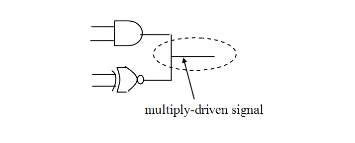

| Description | This rule fires when Leda detects a net that is directly wired by the outputs of more than one logic gate in the design. Removing a wired net of this kind can help avoid competition in the circuit.Arguments:
%s1 is the hierarchical name of the signal Source Position: The line in which the signal is declared. |
| Policy | DESIGN |
| Ruleset | STRUCTURE |
| Language | VHDL/Verilog |
| Type | Hardware |
| Severity | Error |
This is an example of invalid Verilog code, followed by a circuit diagram that illustrates the problem:
module ntl_str19_top ; ... wire net_01,net_02,net_03,net_04; ... assign Dout = net_01 & net_02; // NTL_STR19 fires -- Dout is multiply-driven signal assign Dout = ~(net_03 ^ net_04); ... endmoduleSample Output
5: output A; ^ test_str19.v:5: STRUCTURE> [ERROR] NTL_STR19: Detected multiply driven signal test.A --- Driven by: test.&CAS1.~3state0 (file: test_str19.v, line: 7) --- Driven by: test.&CAS2.~3state1 (file: test_str19.v, line: 8)
In the above sample output,
Secondary Message
Driven by: %s2.
Argument
%s2 is the hierarchical name of the driver.
Source Position
The position is the line in which the driver is instantiated.
Schematics in Path Viewer
Displays the signal and its multiple drivers.
